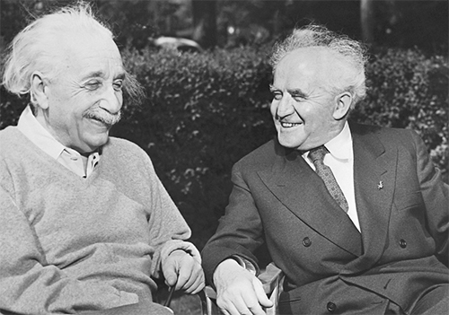

Cùng với Thủ tướng Israel, David Ben–Gurion, ở Princeton, năm 1951
Những vấn đề của thế giới có ý nghĩa quan trọng đối với Einstein, nhưng những vấn đề về vũ trụ lại giúp ông có được cái nhìn toàn cảnh về những vấn đề trần tục. Trong giai đoạn cuối của cuộc đời, dù không tạo ra được mấy ý nghĩa khoa học, nhưng những nỗ lực của ông trong vật lý, chứ không phải chính trị, vẫn là những gì làm nên ý nghĩa cho cuộc đời ông. Một buổi sáng, khi đi đến chỗ làm cùng với phụ tá khoa học của mình và cũng là người ủng hộ chủ trương kiểm soát vũ khí, Ernst Straus, Einstein trầm ngâm nói về việc phân chia thời gian của họ cho hai lĩnh vực. “Nhưng với tôi, những phương trình của chúng ta quan trọng hơn nhiều. Chính trị chỉ phục vụ cho hiện tại, trong khi các phương trình của chúng ta thì bất diệt,” Einstein nói.
Einstein chính thức nghỉ hưu tại Viện Nghiên cứu Cao cấp vào thời điểm cuối cuộc chiến khi ông bước sang tuổi 66. Nhưng ngày ngày ông vẫn tiếp tục đến đó làm việc trong một văn phòng nhỏ, tranh thủ sự hỗ trợ của những phụ tá trung thành sẵn sàng theo đuổi cuộc tìm kiếm lý thuyết trường thống nhất kỳ lạ của ông.
Hằng ngày, ông dậy không quá sớm, ăn sáng và đọc báo, rồi khoảng 10 giờ thì từ tốn đi bộ ngược lên Phố Mercer để đến Viện, kéo theo những câu chuyện có cả thực lẫn ngụy tác. Đồng nghiệp Abraham Pais của ông nhớ lại: “Có lần một chiếc ô tô nọ đã đâm sầm vào cái cây sau khi người lái xe bất ngờ nhận ra khuôn mặt của ông già đẹp lão đang bước đi trên phố, với chiếc mũ len màu đen trên mái tóc dài bạc trắng.”
Không lâu sau khi chiến tranh kết thúc, J. Robert Oppenheimer đến từ Los Alamos đảm nhận vị trí Giám đốc Viện. Là một nhà vật lý lý thuyết thông minh luôn hút thuốc, Oppenheimber chứng tỏ mình có đủ uy tín và khả năng làm một lãnh đạo truyền cảm hứng cho các nhà khoa học chế tạo bom nguyên tử. Với sự cuốn hút và trí tuệ sắc sảo của mình, ông có khuynh hướng hoặc tạo ra những tông đồ đồng đạo, hoặc là những kẻ đối địch; thế nhưng Einstein không rơi vào nhóm nào kể trên. Ông và Oppenheimer nhìn nhau bằng ánh mắt có cả sự thích thú và tôn trọng lẫn nhau, nhờ đó họ phát triển một mối quan hệ chân thành dù không gần gũi.
Khi Oppenheimer lần đầu đến thăm Viện năm 1935, ông đã gọi Viện là “nhà thương điên” với “những ngôi sao duy ngã tỏa sáng trong sự hiu quạnh cách biệt và xui rủi”. Về ngôi sao sáng nhất trong số những ngôi sao ở đây, Oppenheimer phán “Einstein đúng là một ông gàn”, dù vậy có vẻ ý của ông hoàn toàn trìu mến.
Khi họ trở thành đồng nghiệp, Oppenheimer trở nên khéo léo hơn khi đưa ra những cáo buộc mà ai cũng thấy rõ, và những cú chọt của ông cũng trở nên tinh vi hơn. Ông nhận định Einstein là “một tượng đài chứ không phải là cột mốc dẫn đường,” – nói cách khác, Einstein được ngưỡng mộ vì những thành tựu vĩ đại nhưng lại thu hút được rất ít tín đồ trong những nỗ lực gần đây của mình, điều này đúng. Nhiều năm sau này, Oppenheimer đưa ra một mô tả thú vị về Einstein: “Ở ông ấy luôn có một sự thuần khiết mạnh mẽ, vừa trẻ con vừa vô cùng bướng bỉnh.”
Einstein trở nên thân thiết và là người bạn cùng đi bộ đến chỗ làm với một nhân vật biểu tượng khác của Viện, Kurt Gödel212, một người sống cực kỳ nội tâm, một nhà logic toán học nói tiếng Đức đến từ Brno và Vienna. Gödel nổi tiếng với “thuyết bất toàn”, một song đề logic nhằm chứng tỏ rằng bất cứ hệ toán học nào cũng có một số mệnh đề không thể chứng minh là đúng hay sai dựa trên các định đề của hệ đó.
Từ giới trí thức nói tiếng Đức mạnh mẽ này, trong đó vật lý, toán học và triết học bện chặt vào nhau, nổi lên ba lý thuyết trái tai của thế kỷ XX: thuyết tương đối của Einstein, thuyết bất định của Heisenberg và thuyết bất toàn của Gödel. Vẻ giống nhau của ba hạng từ này (cả ba đều gợi lên hình ảnh một vũ trụ thiếu dứt khoát và chủ quan) khiến các học thuyết và mối liên kết giữa chúng nghe có vẻ quá đỗi đơn giản. Tuy nhiên, dường như cả ba lý thuyết đều có sự cộng hưởng triết học, và đây là đề tài thảo luận khi Gödel và Einstein cùng nhau đi bộ tới Viện.
Tính cách của họ rất khác nhau. Einstein rất đỗi hài hước và sắc sảo, Gödel thì thiếu cả hai phẩm chất này, ông là người rất logic và đôi khi chỉ biết đến những phán đoán kinh nghiệm. Về điểm này ở Gödel, có một chuyện khá thú vị khi ông quyết định trở thành công dân Hoa Kỳ năm 1947. Ông nghiêm túc chuẩn bị cho kỳ thi, nghiên cứu kỹ càng Hiến pháp, và (như ta có thể đoán được từ một người lập ra thuyết bất toàn) ông phát hiện thấy điều ông tin là một lỗ hổng logic. Có một sự bất nhất nội tại, ông quả quyết, khiến toàn bộ Chính phủ có thể tha hóa thành độc tài.
Lo ngại, Einstein quyết định đi cùng – kè kè theo đúng nghĩa – với Gödel trong chuyến đi tới Trenton khi Gödel tham gia kỳ kiểm tra tư cách công dân. Người giám sát kỳ kiểm tra này cũng chính là vị Thẩm phán đã kiểm tra Einstein. Khi ngồi trên xe, Einstein và người bạn thứ ba cố gắng khiến Gödel xao lãng và thuyết phục ông không nhắc đến chi tiết lỗ hổng đó, nhưng không thành công. Khi vị Thẩm phán hỏi về Hiến pháp, Gödel đưa ra bằng chứng cho thấy sự bất nhất nội tại của Hiến pháp có thể dẫn đến một nền chuyên chế độc tài. May mắn thay, vị Thẩm phán, giờ đã trân trọng mối quan hệ với Einstein, cắt ngang lời Gödel. Ông nói: “Ông không cần phải đi sâu vào tất cả điều đó,” và tư cách công dân của Gödel được giải cứu.
Trong những lần đi bộ của họ, Gödel đã khám phá một số ý nghĩa của thuyết tương đối, và ông đưa ra một phân tích trong đó gợi ra câu hỏi: Liệu có thể nói thời gian, thay vì đơn thuần mang tính tương đối, là tồn tại hay không? Ông hiểu rằng các phương trình của Einstein mô tả một vũ trụ quay tròn, thay vì (hoặc ngoài việc) mở rộng. Trong trường hợp đó, mối quan hệ giữa không gian và thời gian có thể hòa trộn vào nhau về mặt toán học. “Sự tồn tại của khoảng thời gian khách quan,” ông viết, “có nghĩa là thực tại bao gồm một lượng vô hạn của các lớp ‘hiện tại’ tồn tại kế tiếp nhau. Nhưng nếu tính đồng thời mang tính tương đối, thì mỗi người quan sát sẽ có tập hợp ‘hiện tại’ của riêng mình và không có lớp nào trong vô số các lớp này có thể nhận lấy đặc quyền đại diện cho khoảng thời gian khách quan.”
Do đó, Gödel lập luận, du hành thời gian là khả thi. “Bằng việc đi một vòng trên một tên lửa trong một đường cong đủ rộng, từ các thế giới hiện tại ta có thể đi về bất cứ khu vực nào trong quá khứ, hiện tại và tương lai rồi quay lại.” Điều này nghe có vẻ phi lý, ông viết, bởi vì khi đó chúng ta có thể quay lại và nói chuyện với chính chúng ta khi trẻ hơn (hoặc thậm chí khó chịu hơn nữa là gặp chính chúng ta với tuổi cao hơn trở lại và trò chuyện với chúng ta). “Gödel đã chứng minh một cách tuyệt vời rằng du hành thời gian, theo nghĩa được hiểu chặt chẽ, nhất quán với thuyết tương đối,” Giáo sư Triết học Palle Yourgrau của Đại học Boston viết trong cuốn sách về mối quan hệ của Gödel với Einstein, World Without Time[Thế giới không có thời gian]. “Kết quả là luận điểm rất thuyết phục rằng du hành thời gian là khả dĩ, còn bản thân thời gian thì không.”
Einstein đáp lại bài tiểu luận của Gödel bằng nhiều bài khác mà về sau đã được tập hợp trong một cuốn sách – dường như ông có chút ấn tượng nhưng không hoàn toàn đồng ý với luận điểm này. Trong đánh giá vắn tắt của mình, Einstein gọi đây là “đóng góp quan trọng” của Gödel, nhưng lưu ý rằng chính ông đã nghĩ đến vấn đề này từ trước đó rất lâu và “vấn đề có liên quan đã khiến tôi rối tung”. Ông ngụ ý rằng dù du hành thời gian có thể đúng về quan niệm toán học, nhưng thực tế thì không khả thi. Einstein kết luận: “Sẽ rất thú vị khi đánh giá liệu những điều này có bị loại khỏi địa hạt vật lý hay không.”
Về phần mình, Einstein vẫn tập trung săn tìm con cá voi trắng, ông theo đuổi nó không chỉ với động cơ mãnh liệt như của Ahab213 mà còn với cả sự trầm lặng cung kính của Ishmael214. Trong cuộc kiếm tìm lý thuyết trường thống nhất, ông vẫn chưa có được kiến giải vật lý thuyết phục – chẳng hạn về sự tương đồng của lực hấp dẫn và gia tốc, hoặc tính tương đối của tính đồng thời – để làm kim chỉ nam cho mình, vì vậy những nỗ lực của ông vẫn là cuộc dò dẫm qua những đám mây phương trình toán học trừu tượng mà không có ánh sáng nào định hướng. Ông than thở với một người bạn: “Chẳng khác nào ta ngồi trong một con tàu không gian có thể lái vòng quanh những đám mây, nhưng không thể thấy rõ làm sao để trở về với thực tại, tức Trái đất.”
Trong suốt hàng chục năm, mục tiêu của ông là đưa ra một lý thuyết thống nhất được cả trường điện từ và trường hấp dẫn, nhưng ông không có lý do thuyết phục nào để tin rằng chúng quả thật phải là các thành phần trong cùng một cấu trúc thống nhất, ngoài trực giác rằng tự nhiên yêu thích vẻ đẹp của sự giản đơn.
Tương tự, ông vẫn nuôi hy vọng giải thích được sự tồn tại của các hạt theo lý thuyết trường bằng việc tìm ra các giải pháp dạng điểm chấp nhận được cho các phương trình trường của ông. Một trong những người cộng tác với ông ở Princeton, Banesh Hoffmann, nhớ lại: “Ông ấy lập luận rằng nếu ta hết lòng tin vào ý tưởng cơ bản của lý thuyết trường, [ta sẽ thấy] vật chất bước vào trường không phải như một kẻ xâm phạm chuyên đâm thọt, mà như một thành phần thật sự của trường. Thực tế, ta có thể nói rằng ông muốn xây dựng vật chất từ chỗ chỉ là những nếp gấp không – thời gian.” Trong quá trình này, Einstein đã dùng đến mọi công cụ toán học, nhưng cũng không ngừng tìm kiếm những phương tiện khác. Có lúc ông than vãn với Hoffmann: “Tôi cần thêm kiến thức toán học.”
Tại sao ông lại kiên trì như vậy? Thẳm sâu, những sự phân tách và các cặp đối ngẫu như vậy – các lý thuyết trường khác nhau cho trường hấp dẫn và điện từ trường, những khác biệt giữa hạt và trường – luôn khiến ông bức bối. Sự đơn giản và thống nhất, như trực giác của ông tin tưởng, là công việc của Đấng Tạo Hóa. Ông viết: “Một lý thuyết có tiền đề càng đơn giản thì càng ấn tượng, và nó liên quan đến càng nhiều điều khác nhau cũng như phạm vi ứng dụng của nó càng rộng.”
Đầu những năm 1940, Einstein có một thời gian trở lại với phương pháp toán học năm chiều mà ông đã tiếp nhận từ Theodor Kaluza cách đây 20 năm. Ông thậm chí còn cùng nghiên cứu nó với Wolfgang Pauli, một nhà tiên phong trong cơ học lượng tử, từng lưu lại Princeton trong những năm chiến tranh. Nhưng ông không thể dùng các phương trình của mình để mô tả các hạt.
Vì vậy, ông chuyển sang chiến thuật mang tên “trường hai vectơ”. Lúc này, Einstein có vẻ hơi liều lĩnh. Ông thừa nhận rằng phương pháp này có thể đòi hỏi phải từ bỏ nguyên lý cục bộ mà ông đã thần thánh hóa trong một số thí nghiệm tưởng tượng của mình nhằm công kích cơ học lượng tử. Dù thế nào thì chẳng mấy chốc nó cũng sẽ bị gạt bỏ.
Trong mười năm cuối đời, Einstein theo đuổi một chiến lược mà ông đã cố gắng thực hiện trong những năm 1920. Chiến lược này sử dụng một metric Riemann được cho là không đối xứng, từ đó đưa ra 16 đại lượng. 10 tổ hợp đại lượng như vậy sẽ được sử dụng cho trường hấp dẫn và những tổ hợp còn lại là cho điện từ trường.
Einstein đã gửi những bản đầu tiên của công trình này cho người đồng chí hướng cũ là Schrödinger. Einstein viết: “Tôi không gửi chúng cho ai khác, vì anh là người duy nhất mà tôi biết không bịt tai nhắm mắt trước những câu hỏi nền tảng trong nền khoa học của chúng ta. Nỗ lực này dựa vào một ý tưởng mà thoạt tiên có vẻ lỗi thời và không lợi lộc gì, đưa vào một tensor không đối xứng… Pauli chê bai khi tôi nói với anh ta về việc này.”
Schrödinger bỏ ra ba ngày nghiền ngẫm công trình của Einstein và viết thư hồi đáp rằng ông rất ấn tượng. Ông viết: “Anh đang theo một cuộc chơi ra trò đấy.”
Einstein thấy xúc động về sự ủng hộ đó. “Bức thư này mang đến cho tôi niềm vui khôn xiết,” ông viết, “bởi anh là người anh em thân thiết nhất của tôi và bộ não của anh hoạt động rất giống với bộ não của tôi.” Nhưng chẳng mấy chốc ông bắt đầu nhận ra rằng các lý thuyết mỏng manh mà ông đang xe dệt tuy đẹp về mặt toán học nhưng dường như sẽ chẳng liên quan đến điều gì mang tính vật lý. “Trong thâm tâm, giờ tôi không còn quá chắc chắn như trước nữa. Chúng ta đã tốn quá nhiều thời gian cho học thuyết này, và kết quả chẳng khác gì món quà từ người bà của quỷ,” ông thú nhận với Schrödinger vài tháng sau đó.
Thế nhưng ông vẫn tiếp tục xuất bản các bài nghiên cứu và tạo ra những tiêu đề theo mỗi dịp. Khi ấn bản mới cho cuốn sách của ông, The Meaning of Relativity [Ý nghĩa của thuyết tương đối], chuẩn bị được tung ra năm 1949, ông bổ sung bản mới nhất bài nghiên cứu mà ông đã gửi cho Schrödinger xem vào phần phụ lục. Tờ New York Times đã in lại toàn bộ trang có những phương trình phức tạp trong bản thảo cùng với câu chuyện trang bìa có tiêu đề “Học thuyết mới của Einstein mang đến chiếc chìa khóa chính đi vào vũ trụ: sau 30 năm làm việc, nhà khoa học này đã phát triển khái niệm hứa hẹn sẽ nối liền khoảng cách giữa các vì sao và những hạt nguyên tử.”
Nhưng Einstein sớm nhận ra rằng nghiên cứu này vẫn chưa đúng. Trong sáu tuần kể từ khi ông gửi bản thảo này đến khi nó được chuyển sang nhà in, ông đã suy nghĩ và sửa lại nó.
Trên thực tế, ông còn tiếp tục sửa đổi thuyết này nhiều lần nhưng không lần nào thành công. Có thể thấy rõ sự bi quan ngày một lớn qua những lời than thở mà ông gửi cho một người bạn cũ trong Hội nghiên cứu Olympia, Maurice Solovine, người chịu trách nhiệm xuất bản các tác phẩm của Einstein tại Paris. Năm 1948, ông viết: “Tôi sẽ không bao giờ giải được nó. Nó sẽ bị quên lãng, rồi về sau chắc sẽ lại được khám phá.” Năm sau, ông lại viết: “Tôi không chắc liệu mình có đi đúng hướng hay không nữa. Thế hệ hiện tại xem tôi vừa là kẻ dị giáo vừa là kẻ phản động, người đã cổ lỗ hơn cả chính mình.” Năm 1951, ông viết với sự cam chịu: “Lý thuyết trường thống nhất đã bị xếp xó rồi. Nó khó triển khai về mặt toán học đến mức tôi không kiểm chứng được. Tình trạng này sẽ kéo dài thêm nhiều năm nữa, chủ yếu là vì các nhà vật lý chẳng hiểu gì về các lập luận logic và triết học.”
Cuộc tìm kiếm trường thống nhất của Einstein đã phải chấp nhận số phận là không tạo ra được kết quả hữu hình nào thêm cho khung tham chiếu vật lý. Ông không thể đưa ra kiến giải quan trọng, thí nghiệm tưởng tượng, hay trực giác nào về những nguyên lý nền tảng có thể giúp ông hình dung ra mục tiêu của mình. Hoffmann, người cộng tác với ông, than thở: “Không có hình ảnh nào giúp cho chúng tôi. Mọi thứ hoàn toàn là toán học, và theo năm tháng, cùng với những người giúp đỡ, Einstein cố tự vượt qua từ khó khăn này đến khó khăn khác chỉ để thấy những chướng ngại mới đang đợi mình phía trước.”
Có lẽ cuộc tìm kiếm này là vô ích. Và nếu trong một thế kỷ tiếp theo quả thật không có trường thống nhất nào được tìm ra, nó sẽ bị cho là một nhận thức sai lệch. Nhưng Einstein không bao giờ hối hận vì đã dồn tâm sức cho nó. Khi một đồng nghiệp hỏi ông tại sao ông dành – có lẽ là lãng phí – thời gian vào nỗ lực đơn độc này, ông đáp dù cơ hội tìm thấy lý thuyết trường thống nhất rất nhỏ, nỗ lực của ông vẫn xứng đáng. Ông nhấn mạnh rằng mình đã gây dựng được tên tuổi. Vị trí của ông được bảo đảm, và ông đủ điều kiện để mạo hiểm và bỏ thời gian. Một nhà lý luận trẻ tuổi không thể mạo hiểm như thế, vì nếu làm vậy anh ta có thể sẽ phải hy sinh một sự nghiệp hứa hẹn. Vì vậy, Einstein nói, tìm kiếm nó là bổn phận của ông.
Những thất bại liên tiếp của Einstein trong cuộc tìm kiếm một lý thuyết trường thống nhất không làm giảm bớt những hoài nghi của ông về cơ học lượng tử. Niels Bohr, người thường xuyên tranh luận với ông, đã lưu lại Viện năm 1948 và dành thời gian viết một bài tiểu luận về những tranh luận của họ tại các hội nghị Solvay trước chiến tranh. Vật lộn với bài viết trong văn phòng nằm trên văn phòng của Einstein một tầng, Bohr bị tắc ý tưởng và phải nhờ Abraham Pais giúp sức. Mỗi khi Bohr hằm hằm bước quanh chiếc bàn chữ nhật, Pais lại vừa trấn an Bohr vừa ghi chép.
Khi thấy nản, thỉnh thoảng Bohr lầm bầm lặp đi lặp lại một từ nào đó. Chẳng mấy chốc Bohr quay sang lầm bầm tên của Einstein. Ông thường bước tới cửa sổ và lẩm bẩm nhiều lần: “Einstein… Einstein…”
Có một lần, Einstein nhẹ nhàng mở cửa, rón rén bước vào và ra dấu bảo Pais đừng nói gì. Ông đến để lấy một điếu thuốc lá, bác sỹ đã yêu cầu ông không được mua và hút thuốc nữa. Bohr cứ lầm bầm, cuối cùng thốt lên từ cuối “Einstein” rõ to và sau đó quay lại thì nhìn thấy nguyên nhân gây ra nỗi ám ảnh của mình đang đứng đó. “Bảo rằng lúc đó Bohr chết sững thì vẫn còn nhẹ nhàng,” Pais nhớ lại. Thế rồi, sau giây phút đó, cả ba đều phá lên cười.
Một đồng nghiệp khác cũng cố gắng và thất bại trong việc thay đổi nhận thức của Einstein là John Wheeler, nhà vật lý lý thuyết nổi tiếng của Đại học Princeton. Một buổi chiều nọ, ông qua phố Mercer để giải thích một phương pháp mới giúp tiếp cận thuyết lượng tử (được gọi là phương pháp tính tổng mọi lịch sử khả dĩ [sum-over-history]) mà ông đang phát triển cùng học viên cao học của mình, Richard Feynman. Wheeler nhớ lại: “Tôi đã đến nhà Einstein với hy vọng thuyết phục được ông ấy về tính tự nhiên của thuyết lượng tử khi nhìn từ góc độ này.” Einstein kiên nhẫn lắng nghe trong vòng 20 phút, nhưng khi Wheeler kết thúc, ông lặp lại câu điệp khúc rất đỗi quen thuộc: “Tôi không tin Thượng đế lòng lành lại chơi trò tung xúc xắc.”
Wheeler không giấu nỗi thất vọng, và Einstein xoa dịu đi một chút. “Tất nhiên tôi có thể sai,” ông nói bằng giọng chậm rãi và hài hước. “Nhưng có lẽ tôi có quyền được sai.” Sau này, Einstein giãi bày với một người bạn khác giới: “Tôi không nghĩ rằng tôi sẽ sống để tìm ra ai là người đúng.”
Wheeler tiếp tục quay trở lại, đôi khi mang theo học viên của mình, và Einstein thừa nhận rằng nhiều lập luận của Wheeler “dễ hiểu”. Nhưng ông không bao giờ thay đổi ý kiến. Gần cuối đời, Einstein mở một bữa tiệc nhỏ thiết đãi nhóm học trò của Wheeler. Khi trò chuyện về cơ học lượng tử, một lần nữa ông lại cố gắng chỉ ra những lỗ hổng trong quan điểm cho rằng quan sát có thể ảnh hưởng và quyết định thực tại. Einstein hỏi họ: “Khi một con chuột quan sát thì điều đó có làm thay đổi trạng thái của vũ trụ không?”
Mileva Marić, với sức khỏe ngày một kém do một loạt những cơn đột quỵ nhỏ, vẫn sống ở Zurich và cố gắng chăm sóc cậu con trai Eduard ngày càng thất thường và bạo lực, đang sống ở nhà thương điên. Bà lại gặp phải những vấn đề tài chính, điều đó lại khiến bà và người chồng cũ căng thẳng. Phần tiền từ giải thưởng Nobel mà ông gửi vào quỹ tín thác ở Mỹ cho bà đã bị trượt giá trong thời kỳ Suy thoái, và bà đã phải bán hai trong số ba căn nhà đã mua để lo cho Eduard. Cuối năm 1946, Einstein thúc giục bà bán nốt căn nhà còn lại và để người giám định pháp lý cho Eduard quản lý số tiền đó. Nhưng Marić có hoa lợi từ ngôi nhà này cũng như tiền cho thuê và giấy quyền ủy quyền sở hữu nó, và bà lo sợ sẽ mất đi bất kỳ quyền kiểm soát nào.
Vào một ngày lạnh giá mùa đông năm đó, bà trượt ngã trên băng tuyết khi đi đến chỗ Eduard, và bất tỉnh cho đến khi được những người lạ phát hiện. Bà biết mình sẽ qua đời sớm thôi, và thường có cơn ác mộng với cảnh tượng vật lộn trong tuyết mà không thể đến với Eduard. Bà hoảng sợ về những gì sẽ xảy ra với Eduard và viết cho Hans Albert những bức thư đau lòng.
Einstein đã thành công trong việc bán ngôi nhà của bà vào đầu năm 1948, nhưng với quyền ủy nhiệm, Marić đã không để số tiền đó tới tay ông. Ông viết cho Hans Albert, kể rõ mọi chuyện và hứa với Hans Albert rằng dù có chuyện gì xảy ra đi nữa, ông vẫn sẽ chăm sóc Eduard, “bất kể có phải dốc sạch tiền tiết kiệm trong túi”. Tháng Năm năm đó, Marić bị đột quỵ lần nữa và chìm vào hôn mê, trong cơn mê sảng bà chỉ nói đi nói lại “Không, không!” cho đến tận khi qua đời ba tháng sau đó. Số tiền bán căn hộ, 85.000 franc Thụy Sĩ, được tìm thấy dưới giường của bà.
Eduard chìm vào tình trạng mụ mị, và không bao giờ nói về mẹ nữa. Carl Seelig, một người bạn của Einstein sống gần đó, thường đến thăm Eduard rồi báo cho Einstein hay về tình trạng của cậu. Seelig hy vọng có thể thuyết phục Einstein liên lạc với Eduard, nhưng ông không bao giờ làm thế. Ông nói với Seelig: “Có gì đó ngăn tôi mà tôi không thể nào nói cho rõ được. Tôi tin là mình chỉ gây ra trong nó những cảm giác đau đớn thuộc đủ loại khác nhau nếu tôi hiện diện dưới bất cứ hình thức nào.”
Sức khỏe của Einstein bắt đầu kém đi vào năm 1948. Ông đã bị đau dạ dày và thiếu máu từ nhiều năm, đến cuối năm đó, sau một loạt những cơn đau dữ dội kèm nôn mửa, ông phải nằm tại bệnh viện Do Thái ở Brooklyn. Phẫu thuật thăm dò cho thấy có hiện tượng phình động mạch bụng215 nhưng các bác sỹ kết luận rằng không thể can thiệp gì nhiều với chứng bệnh này. Theo phán đoán, chứng bệnh này có thể gây tử vong cho ông, cho đến lúc đó, ông có thể tiếp tục sống với một chế độ ăn lành mạnh.
Để phục hồi sức khỏe, ông đã thực hiện chuyến đi dài nhất trong suốt 22 năm ở Princeton: xuống Sarasota, Florida. Đây là lần duy nhất ông tránh được sự chú ý của công chúng một cách thành công. Tờ báo địa phương than vãn: “Einstein – vị khách lảng tránh Sarasota”.
Helen Dukas đi cùng ông. Sau khi Elsa qua đời, bà bảo vệ ông trung thành hơn nữa, thậm chí đến mức không để những bức thư từ Evelyn, con gái của Hans Albert, đến tay ông. Hans Albert nghi ngờ rằng Dukas có thể có tình cảm với cha mình và nói điều này với những người khác. Peter Bucky, bạn của gia đình Einstein, về sau nhớ lại: “Hans Albert nói với tôi nhiều lần về mối nghi ngờ từ lâu trong lòng anh ta.” Tuy vậy, những người biết Dukas đều thấy nghi ngờ này không hợp lý.
Khi đó, Einstein đã trở nên thân thiện hơn nhiều với người con hiện đang là giáo sư dạy kỹ thuật được trọng vọng ở Berkeley. Hans Albert về sau nhớ lại những chuyến đi tới miền Đông thăm cha: “Mỗi khi gặp nhau, chúng tôi kể với nhau về những tiến triển thú vị trong lĩnh vực và công việc của mình.” Einstein đặc biệt thích tìm hiểu về những phát minh và cách giải mới cho các câu đố. Hans Albert nói: “Có thể cả phát minh và câu đố nhắc ông nhớ đến những ngày hạnh phúc, không lo âu và thành công tại Cục Cấp bằng Sáng chế ở Bern.”
Em gái yêu quý của Einstein, Maja, người thân gần gũi nhất trong cuộc đời ông, cũng trong tình trạng sức khỏe suy yếu. Bà phải đến Princeton khi Mussolini ban hành các điều luật bài Do thái; còn Paul Winteler, người chồng mà bà xa cách nhiều năm, đã chuyển tới Thụy Sĩ ở với vợ chồng em gái của ông, gia đình Michele Besso. Họ giữ liên lạc thường xuyên, nhưng không bao giờ tái ngộ.
Cũng như Elsa, Maja ngày càng giống Einstein với mái tóc bạc xõa và nụ cười tinh quái. Cách chuyển giọng và lối nói hơi hoài nghi của bà khi hỏi cũng giống giọng ông. Dù là người ăn chay nhưng bà thích ăn xúc xích, vì vậy Einstein tuyên bố rằng đó là một loại rau, việc đó làm bà mãn nguyện.
Maja bị đột quỵ, và đến năm 1948, gần như cả ngày bà phải nằm liệt trên trên giường. Einstein cưng chiều bà hơn hết thảy mọi người. Tối tối ông đọc sách cho bà nghe. Thỉnh thoảng ông đọc cho bà nghe về những vấn đề khá phức tạp, chẳng hạn như những luận điểm mà Ptolemy đưa ra để phản bác quan điểm của Aristarchu cho rằng Trái đất quay quanh Mặt trời. Ông viết cho Solovine vào tối hôm đó: “Tôi không thể không liên tưởng đến những tranh luận nhất định của các nhà vật lý ngày nay: có học và tài tình, nhưng thiếu hiểu biết.” Những lần khác, ông đọc cho bà những thứ đơn giản hơn, nhưng có lẽ cũng cần suy tư chẳng kém gì, chẳng hạn Don Quixote. Đôi khi ông so sánh những cú né gạt kiểu Đông-ki-sốt của chính mình trước những cối xay gió khoa học đang thống lĩnh với cú đỡ của người hiệp sĩ già với một ngọn giáo lăm lăm phía trước.
Khi Maja qua đời vào tháng Sáu năm 1951, Einstein tột cùng đau khổ. Ông viết cho một người bạn: “Tôi thương nhớ em tôi vô cùng.” Ông ngồi ở hàng hiên sau ngôi nhà trên phố Mercer hàng giờ, chằm chằm nhìn vào khoảng không, trông tái nhợt đi và căng thẳng. Khi Margot đến an ủi, ông chỉ lên trời và nói như để tự làm yên lòng: “Hãy nhìn sâu vào tự nhiên, con sẽ hiểu nó rõ hơn đấy.”
Margot bỏ chồng, và ông này phản ứng bằng việc bắt tay ngay vào thực hiện một việc mà ông ta ấp ủ từ lâu: viết một cuốn tiểu sử kể những điều không hay về Einstein. Margot tôn thờ Einstein, và họ gắn bó với nhau hơn theo năm tháng. Ông thấy sự có mặt của bà thật thú vị. Ông nói: “Khi Margot cất lời, cũng như thấy hoa nở.”
Khả năng phát sinh và cảm nhận tình cảm của ông chứng tỏ cái tiếng xa cách trong cảm xúc mà ông bị gán cho là không đúng. Cả Maja và Margot thích sống với ông hơn là với những ông chồng của họ khi họ ở vào tuổi xế chiều. Ông là một người chồng và người cha khó tính vì không chấp nhận sự ràng buộc, nhưng ông có thể mãnh liệt và nồng nhiệt với cả gia đình lẫn bạn bè khi tự nguyện tham gia vào những quan hệ đó, chứ không phải bị bó buộc.
Einstein là con người, và vì vậy ông có cả mặt tốt và những thiếu sót, khuyết điểm lớn nhất của ông thì liên quan đến đời tư. Ông có những người bạn suốt đời quan tâm hết lòng tới ông, và những thành viên gia đình rất mực yêu quý ông, nhưng với một số người – như Mileva và Eduard – thì ông dựng lên bức tường ngăn cách khi mối quan hệ trở nên quá đau đớn.
Các đồng nghiệp thấy con người nhân từ nơi ông. Ông nhẹ nhàng và rộng lượng với các cộng sự và cấp dưới, cả những người ủng hộ cũng như bất đồng với ông. Ông có những tình bạn sâu sắc kéo dài hàng thập kỷ. Ông lúc nào cũng khoan dung với các phụ tá của mình. Sự ấm áp của ông, đôi khi không thể hiện với gia đình, tỏa rạng trên khắp nhân loại. Nên khi về già, ông không chỉ được các đồng nghiệp tôn kính, mà còn được yêu quý rất mực.
Khi ông trở về sau chuyến hồi phục sức khỏe ở Florida, họ tổ chức mừng lễ sinh nhật lần thứ 70 của ông, bằng cả tình thân trong nghiên cứu khoa học và lẫn tình thân quan hệ riêng tư mà Einstein may mắn có được từ những ngày còn là sinh viên. Mặc dù đáng lẽ phải nói về sự nghiệp khoa học của Einstein, song các cuộc nói chuyện lại chủ yếu là về con người dịu dàng và nhân văn nơi ông. Khi ông bước vào, mọi người nín lặng, và sau đó là tiếng vỗ tay vang dội. Một phụ tá của ông nhớ lại: “Einstein không biết gì về sự kính phục tuyệt đối dành cho ông.”
Những người bạn thân thiết nhất của ông tại Viện đã mua tặng ông một món quà, một chiếc đài AM-FM tân tiến và một dàn máy chơi nhạc cho âm thanh có độ trung thực cao, mà họ đã bí mật lắp đặt trong nhà ông khi ông đi làm vào một bữa nọ. Einstein xúc động, ông không chỉ dùng dàn máy này để nghe nhạc mà còn nghe tin tức. Ông đặc biệt thích nghe những lời bình luận của Howard K. Smith.
Ở thời điểm đó ông đã bỏ chơi vĩ cầm khá lâu. Việc đó chẳng còn dễ dàng đối với những ngón tay đã già nua của ông. Thay vào đó, ông tập trung vào piano, loại nhạc cụ mà ông chơi không khá lắm. Có lúc, sau nhiều lần bị vấp khi chơi một bản nhạc, ông quay sang nhìn Margot và cười. Ông nói: “Đoạn này Mozart viết dở quá.”
Ông ngày càng giống một nhà tiên tri với mái tóc dài hơn, đôi mắt buồn và mệt mỏi hơn. Gương mặt ông lộ những vết hằn sâu nhưng lại có vẻ gì đó thanh nhã. Nó cho thấy cả sự khôn ngoan, sự từng trải và sức sống. Ông không chỉ mang vẻ mơ màng, như thuở thơ bé, mà giờ trông còn trong sáng.
Ông viết cho Max Born, lúc đó là giáo sư tại Edinburgh, một trong những người bạn mà ông vẫn giữ được tình cảm quý mến lẫn nhau bền lâu: “Nhìn chung thì tôi bị xem là vật hóa đá rồi. Tôi không thấy vai trò này khó chịu lắm vì nó rất hợp với tính tôi… Tôi thích cho hơn là nhận trên mọi phương diện, không khắt khe với bản thân hay các việc làm của công chúng, không xấu hổ về những nhược điểm và tật xấu của mình, cũng như tự nhiên tiếp thu mọi điều khi chúng đến với sự bình thản và óc hài hước.”
Trước Chiến tranh Thế giới Thứ hai, Einstein đã tuyên bố ông phản đối Nhà nước Do Thái khi phát biểu trước 3.000 linh mục tại một cuộc tọa đàm ở khách sạn Manhattan. Ông nói: “Những gì tôi nhận thức về bản chất cốt yếu của Do Thái giáo khiến tôi phản đối ý tưởng về một quốc gia Do Thái có biên giới, quân đội và một số quyền lực tạm thời. Tôi sợ rằng Do Thái giáo vẫn lưu giữ những tổn thương bên trong – đặc biệt do sự phát triển của chủ nghĩa dân tộc hẹp hòi trong hàng ngũ giới chức của chúng ta. Chúng ta không còn là những người Do Thái của thời kỳ Maccabee nữa.”
Sau chiến tranh, ông vẫn giữ lập trường như thế. Khi ra làm chứng tại Washington năm 1946 trước một ủy ban quốc tế đang xem xét tình hình ở Palestine, ông lên án người Anh đã đẩy người Do Thái vào thế kình địch với người Ả Rập, ông kêu gọi người Do Thái định cư, nhưng lại bác bỏ quan điểm cho rằng người Do Thái phải có tinh thần dân tộc. “Ý tưởng Nhà nước không có trong tôi,” ông nói nhỏ nhưng lại gây choáng váng cho những khán giả nhiệt thành theo chủ nghĩa Phục quốc Do Thái đang ngồi dưới ghế cử tọa. “Tôi không hiểu tại sao việc đó lại cần thiết.” Giáo sĩ Do thái Stephen Wise sửng sốt không tin nổi rằng Einstein sẽ phá vỡ hàng lối của những người theo chủ nghĩa Phục quốc Do Thái tại một buổi điều trần công khai như thế, và ông bắt Einstein phải ký một tuyên bố thanh minh, mà thật ra chẳng để thanh minh điều gì.
Einstein đặc biệt thất vọng về những biện pháp quân phiệt mà Menachem Begin và các lãnh đạo quân đội Do Thái sử dụng; ông cùng Sidney Hook, người thỉnh thoảng bất đồng ý kiến với ông, ký tên vào một đơn kiến nghị đăng trên tờ New York Times, lên án Begin là kẻ “khủng bố” và “rất giống” phát xít. Bạo lực là trái với di sản Do Thái. Năm 1947, ông viết cho một người bạn: “Chúng ta đã bắt chước một thứ chủ nghĩa dân tộc ngớ ngẩn và có những hành động phi lý cực đoan dưới danh nghĩa Do Thái nhưng lại không phải là Do Thái.”
Nhưng khi Nhà nước Israel được tuyên bố khai sinh năm 1948, Einstein viết cho chính người bạn đó nói rằng thái độ của ông đã thay đổi. Ông thừa nhận: “Tôi chưa bao giờ cho rằng ý tưởng về một nhà nước là hay vì các lý do kinh tế, chính trị và quân sự. Nhưng giờ thì không lùi được nữa, và ta phải chiến đấu cho nó.”
Sự ra đời của Nhà nước Israel khiến ông một lần nữa từ bỏ chủ nghĩa hòa bình trong sáng trước đây của mình. Ông viết cho một nhóm người Do Thái ở Uruguay: “Có thể chúng ta sẽ hối tiếc vì đã dùng đến các biện pháp mà tự chúng ta thấy đó là đáng ghét và ngớ ngẩn, nhưng để thiết lập được những điều kiện tốt hơn trên trường quốc tế, thì trước tiên chúng ta phải tận lực bảo vệ những gì đã có.”
Chaim Weizmann, một người theo chủ nghĩa Phục quốc Do thái không mỏi mệt, cũng là người đã đưa Einstein đến Mỹ năm 1921, trở thành Tổng thống đầu tiên của Israel, một vị trí đem lại thanh thế nhưng nhìn chung chỉ mang tính nghi thức trong một hệ thống mà phần lớn quyền lực được chuyển giao cho thủ tướng và nội các. Khi Weizmann qua đời vào tháng Mười một năm 1952, một tờ báo của Jerusalem bắt đầu ủng hộ việc chọn Einstein thay thế ông ta. Thủ tướng David Ben-Gurion chịu thua trước áp lực và tin đồn nhanh chóng lan rộng rằng Einstein đã được mời đảm nhận chức vụ này.
Đó là một ý tưởng hiển nhiên nhưng cũng thật sửng sốt – và không thực tế. Einstein lần đầu biết đến việc này là qua một bài báo nhỏ trên tờ New York Times một tuần sau khi Weizmann qua đời. Đầu tiên, ông và những người phụ nữ trong gia đình cười xòa, nhưng sau đó các phóng viên bắt đầu gọi điện đến. Ông nói với một vị khách: “Chuyện này kỳ cục quá.” Một vài giờ sau, một bức điện của Abba Eban, Đại sứ Israel tại Washington, được gửi đến. Liệu Sứ quán có thể cử người đến gặp ông chính thức vào ngày hôm sau không, bức điện hỏi.
Einstein than vãn: “Tại sao ông ta phải làm thế trong khi tôi chỉ có thể trả lời là không chứ?”
Helen Dukas nảy ra ý tưởng đơn giản là gọi điện cho Đại sứ Eban. Thời đó, những cuộc gọi đường dài không chuẩn bị trước như vậy khá hiếm. Chính Dukas cũng không khỏi ngạc nhiên khi bà có thể liên lạc với Eban ở Washington và bảo ông ta nói chuyện với Einstein.
Einstein nói: “Tôi không phải là người phù hợp cho vị trí này, và tôi khó có thể đảm đương việc đó.”
Eban trả lời: “Tôi không thể nói với Chính phủ của mình rằng ông đã gọi điện và nói từ chối. Tôi phải tiến hành việc này và đưa ra lời đề nghị chính thức.”
Cuối cùng Eban cử một cấp phó đi, ông này trao cho Einstein bức thư chính thức đề nghị ông đảm nhận chức Tổng thống. Bức thư của Eban (có lẽ để phòng trường hợp Einstein có bất cứ ý nghĩ viển vông nào rằng có thể chỉ đạo Israel từ Princeton) viết: “Nếu nhận lời, ông sẽ phải đến Israel và nhận quốc tịch Israel”. Tuy nhiên, Eban nhanh chóng trấn an Einstein: “Ông sẽ được trao quyền tự do theo đuổi các công trình khoa học vĩ đại bởi một chính phủ và dân tộc hoàn toàn hiểu rõ ý nghĩa tối thượng trong công trình lao động của ông.” Nói cách khác, đó là công việc cần ông hiện diện, ngoài ra không phải làm gì khác.
Dù lời đề nghị đó có vẻ kỳ lạ nhưng đó là một bằng chứng thuyết phục về vị trí không ai có thể vượt qua nổi của Einstein với tư cách là người hùng của người Do Thái. Eban nói rằng nó “thể hiện sự trân trọng sâu sắc nhất của người Do Thái trước một người con của dân tộc”.
Einstein đã chuẩn bị sẵn thư từ chối, ông gửi nó cho vị Công sứ của Eban khi ông này đến. Vị khách nói đùa: “Cả đời là luật sư, thế mà chưa bao giờ tôi lại bị khước từ trước khi kịp trình bày ý kiến của mình như thế này.”
Einstein viết trong thư phản hồi đã chuẩn bị rằng lời mời làm ông “cảm động sâu sắc” và “lập tức cảm thấy buồn và hổ thẹn” vì không thể nhận lời mời này. Ông giải thích: “Cả đời tôi đã xử lý những vấn đề khách quan, vì vậy tôi thiếu cả khả năng bẩm sinh lẫn kinh nghiệm để biết ứng xử thích đáng và thực hiện các công việc của một quan chức. Điều này càng khiến tôi thêm buồn vì mối quan hệ của tôi với người Do Thái đã trở thành mối liên kết giữa con người với con người mãnh liệt nhất khi tôi hiểu rõ về vị trí bấp bênh của chúng ta giữa các quốc gia trên thế giới.”
Việc đề nghị Einstein nhận chức Tổng thống Israel là một ý tưởng thông minh, nhưng Einstein đã đúng khi nhận ra rằng đôi khi ý tưởng thông minh cũng là một ý tưởng vô cùng tồi. Như ông viết với sự tự nhận thức có hàm ý tự trào thường thấy, ông không có năng lực để ứng xử với con người đúng theo vai trò được yêu cầu, ông cũng không có tính cách cần thiết để là một quan chức. Ông không được chuẩn bị để làm một chính khách hay một kẻ bù nhìn.
Ông thích nói ra suy nghĩ của mình và thiếu sự thận trọng cũng như tính thỏa hiệp cần thiết để xử lý, hoặc thậm chí dẫn dắt, dù ở góc độ biểu trưng, các tổ chức phức tạp. Quay lại thời điểm khi ông góp phần đóng vai trò lãnh đạo bù nhìn trong quá trình thành lập Đại học Hebrew, khi đó ông không có cả tài xử lý lẫn tính cách thích hợp để tảng lờ tất cả những chiêu trò có liên quan. Tương tự, thời gian đó ông cũng có kinh nghiệm không mấy dễ chịu với nhóm thành lập Đại học Brandeis gần Boston, khiến ông phải rút lui khỏi nỗ lực đó.
Ngoài ra, ông chưa bao giờ thể hiện được năng lực điều hành rõ ràng. Bổn phận hành chính duy nhất mà ông từng đảm nhiệm là đứng đầu một viện vật lý mới tại Đại học Berlin. Khi đó, ông chẳng làm gì nhiều ngoài việc thuê cô con gái xử lý một số công việc văn phòng và tạo công ăn việc làm cho một nhà thiên văn học đang cố gắng chứng thực các thuyết của ông.
Tài năng của Einstein đến từ tính cách nổi loạn, không chịu lùi bước trước bất cứ ngăn trở nào kìm hãm tự do phát biểu của ông. Liệu có còn đặc điểm nào tệ hơn những đặc điểm tính cách này cho một người sẽ phải là nhà hòa giải chính trị không? Như ông giải thích trong một bức thư lịch sự gửi tờ báo phát động chiến dịch ủng hộ ông ở Jerusalem, ông không muốn đứng trước nguy cơ phải làm theo một quyết định của chính phủ mà lại “có thể xung đột với lương tâm của tôi”.
Trong hoạt động xã hội cũng như trong khoa học, ông luôn là một người phá cách, không chịu phục tùng. Einstein từng thừa nhận với một người bạn: “Đúng là nhiều người nổi loạn rốt cuộc lại trở thành người nắm trọng trách. Nhưng tôi sẽ không để mình phải làm vậy.”
Ben-Gurion kín đáo thở phào nhẹ nhõm. Ông ta bắt dầu nhận ra rằng ý tưởng này không phải là tệ. Ông ta nói đùa với người trợ lý: “Hãy cho tôi biết phải làm gì nếu ông ấy đồng ý. Tôi đã phải mời ông ấy nhận vị trí này vì không thể không làm vậy. Nhưng nếu ông ấy nhận lời, thì chúng ta sẽ gặp rắc rối to.” Hai ngày sau, khi Đại sứ Eban tình cờ gặp Einstein tại một buổi chiêu đãi trang trọng ở New York, ông ta vui mừng vì chuyện đó đã qua. Lúc đó, Einstein không đi tất.